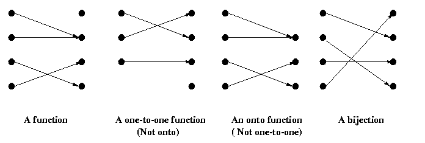

Function
Definitions on Function
Subjects to be Learned
- function
- domain, codomain
- image
- image of set
- range
- sum of functions
- product of functions
- one-to-one function (injection)
- onto function (surjection)
- one-to-one onto function (bijection)
- inverse function
- composite function
Contents
A function is something that associates each element of a set with an element of another
set (which may or may not be the same as the first set).
The concept of function appears quite often even in nontechnical contexts.
For example,
a social security number uniquely identifies the person,
the income tax rate varies depending on the income, the final letter grade
for a course is often determined by test and exam scores, homeworks and projects,
and so on.
In all these cases to each member of a set (social security number, income,
tuple of test and exam scores,
homeworks and projects) some member of another set (person, tax rate, letter grade,
respectively) is assigned.
As you might have noticed, a function is quite like a
relation.
In fact, formally, we define a function as a special type of binary relation.
Definition (function): A function,
denote it by f, from a set A
to a set B
is a relation from A to B that satisfies
-
for each element a in A, there is an element b
in B such that <a, b> is in the relation, and
-
if <a, b> and <a, c> are in the relation, then
b = c .
The set A in the above definition is called the
domain of the function
and B its codomain.
Thus, f is a function if it covers the domain (maps every element of the domain)
and it is single valued.
The relation given by f between a and b represented by the ordered pair
<a, b>
is denoted as
f(a) = b ,
and b is called the image of a
under f .
The set of images of the elements of a set S under a function f
is called the image of the set S under f, and is denoted by
f(S) ,
that is,
f(S) = { f(a) | a
 S },
where S is a subset of the domain A of f .
S },
where S is a subset of the domain A of f .
The image of the domain under f is called the range
of f .
For properties of function in general click here for optional reading material.
Example: Let f be the function from the set of natural numbers N
to N that maps each natural number x to x2 .
Then the domain and codomain of this f are N, the image of, say 3,
under this
function is 9, and its range is the set of squares, i.e.
{ 0, 1, 4, 9, 16, ....} .
Definition (sum and product): Let f and g be functions
from a set A to the set of real numbers R.
Then the sum and the
product of f and g are defined as follows:
For all x, ( f + g )(x) = f(x) + g(x) , and
for all x, ( f*g )(x) = f(x)*g(x) ,
where f(x)*g(x) is the product of two real numbers
f(x) and g(x).
Example: Let f(x) = 3x + 1 and g(x) =
x2 .
Then ( f + g )(x) = x2 + 3x + 1 ,
and ( f*g )(x) = 3x3 + x2
Definition (one-to-one): A function f is said to be one-to-one (injective)
, if and only if whenever f(x) = f(y) , x = y .
Example: The function f(x) = x2 from the set of natural
numbers N to N is a one-to-one function. Note that
f(x) = x2 is not one-to-one if it is from the set of integers(negative
as well as non-negative) to N , because for example f(1) =
f(-1) = 1 .
Definition (onto): A function f from a set A to a set B is said to be
onto(surjective)
, if and only if for every element y of B , there is an element
x in A such that f(x) = y , that is, f is onto
if and only if
f( A ) = B .
Example: The function f(x) = 2x from the set of natural
numbers N to the set of non-negative even numbers E is an onto function.
However, f(x) = 2x from the set of natural
numbers N to N is not onto, because, for example, nothing in N
can be mapped to
3 by this function.
Definition (bijection): A function
is called a bijection
, if it is onto and one-to-one.
For properties of surjection, injection and bijection
click here for optional reading material.
Example: The function f(x) = 2x from the set of natural
numbers N to the set of non-negative even numbers E is one-to-one and onto.
Thus it is a bijection.
Every bijection has a function called the inverse function.
These concepts are illustrated in the figure below.
In each figure below, the points on the left are in the domain and the ones
on the right are in the codomain, and arrows show < x, f(x) > relation.

Definition (inverse): Let f be a bijection from a set A to a set B.
Then the function g
is called the
inverse function of f, and it is denoted by f -1 ,
if for every element y of B, g(y) = x , where f(x) = y .
Note that such an x is unique for each y because f is a bijection.
For example, the rightmost function in the above figure is a bijection and
its inverse is obtained
by reversing the direction of each arrow.
Example: The inverse function of f(x) = 2x from the set of natural
numbers N to the set of non-negative even numbers E is
f -1(x) = 1/2 x from E to N . It is also a bijection.
For properties of inverse function click here for optional reading material.
A function is a relation. Therefore one can also talk about composition of functions.
Definition (composite function): Let g be a function from a set A
to a set B , and let f be a function from B
to a set C . Then the composition of functions f and g ,
denoted by fg , is the function from A to C that satisfies
fg(x) = f( g(x) ) for all x in A .
Example: Let f(x) = x2 , and g(x) =
x + 1 . Then f( g(x) ) = ( x + 1 )2 .
For properties of composite function click here for optional reading material.
Test Your Understanding of Function
Indicate which of the following statements are correct and which are not.
Click True or False , then Submit. There are two sets of questions.
Next -- Growth of Functions
Back to Schedule
Back to Table of Contents